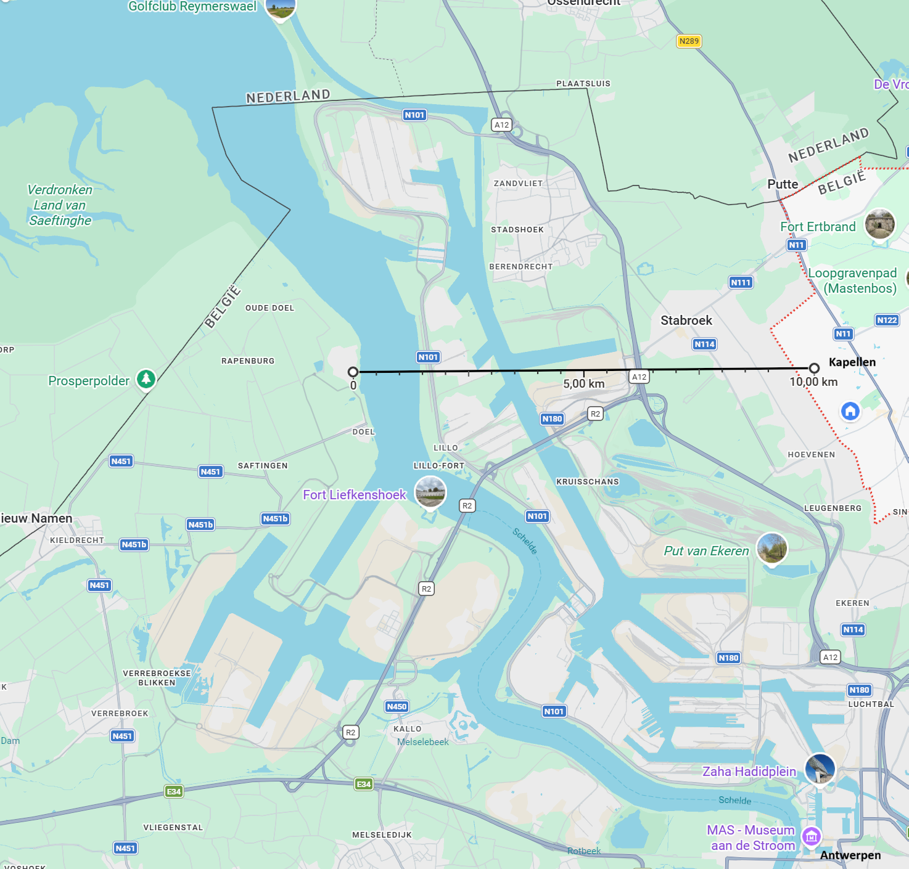

Current Radiation
Normal background radiation levels
- External Radiation = 0,8mSv/y:
- Terrestrial (soil and building materials) = 0,45mSv/y
- Cosmic Radiation = 0,35mSv/y
- Radon Gas (alpha-radiation) = 1,3mSv/y
- Internal exposure (isotopes in your body) = 0,3mSv/y
My Geiger-Müller counter detects ambient radiation. Its sensitivity should yield an average of 25 clicks per minute, corresponding to the expected normal background radiation of roughly 0,8mSv/y.
The radioactive decay causing this radiation is a random process, governed by the weak nuclear force (the probabilistic nature of the decay time is described by the Quantum Field Theory). Because of this randomness, the count rate fluctuates significantly from minute to minute. The count typically ranges between 15 and 50 clicks per minute.

Background info
Chernobyl
I was 16 years old when the Chernobyl nuclear disaster occurred.
That was about 2.000 km away from where I lived.
The radioactive cloud reached us a week later. This led to minor soil and food contamination, as well as temporary precautionary measures, such as washing vegetables and keeping livestock indoors.
I have always found it quite remarkable that the livestock had to be kept inside, while we didn't.
Fukushima
In 2011, the Fukushima nuclear disaster occurred, forcing residents in the surrounding area to evacuate. This took place as events unfolded at the nuclear power plant, and the evacuation zone was subsequently expanded as more information on radiation levels became available.
Since then, many residents have been able to return to their villages following large-scale soil decontamination efforts.
Evacuation is not a decision for a government to take lightly. I would prefer to have objective information myself.
If I lived there, I would want to know the exact extent of the remaining soil contamination.
Doel
In 2012, an inspection revealed thousands of small irregularities in the thick steel walls of the reactor vessels. Ever since, these reactors have been referred to as the "cracked reactors."
Several of the oldest reactors have been taken out of service to be dismantled—a process that will undoubtedly be carried out in accordance with strict safety procedures.
In Belgium, the government structure consists of six separate administrations for a population of less than 12 million, with mandates that frequently overlap.
For instance, there are seven ministers with portfolios related to climate, six for the environment, and four for energy—plus an additional state secretary.
Should an incident occur, achieving transparent decision-making and rapid action are by no means guaranteed.
Kapellen, the town where I live, is located about 10 km from the nuclear power plant in Doel. If something happens, I want to know about it myself and be able to assess the seriousness of the situation independently.
Technical setup
I bought a Geiger-Müller counter from a Ukrainian webshop.
It is a great device: decent sensitivity, relatively cheap and most of all: it has a digital output! That makes it really easy to interface with a Wemos D1 running some code I loaded via ESPHome.
My Home Assistant pulls the readings from the Wemos D1, and I have a nice dashboard showing me the clicks per minute, hourly radiation dose and estimated yearly dose. If radiation levels exceed a certain treshold, I get an alert on my phone.
Quite a few neighbors and friends got interested in the radiation levels I'm tracking, which really boosts my ego :-)
Now I also publish a couple of values via a Home Assistant automation to a file on GitHub, where I have a (beautiful!) GitHub Page that reads these values directly from that file.
Counter -> Wemos D1 -> Home Assistant -> Github-file